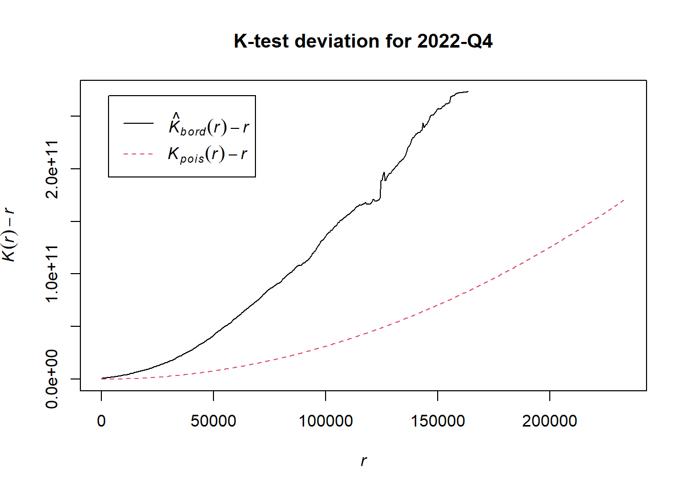

pacman::p_load(sf,tmap,tidyverse,spatstat,raster,sparr)Take Home Exercise 1: Geospatial Analytics for Social Good: Application of Spatial and Spatio-temporal Point Patterns Analysis to discover the geographical distribution of Armed Conflict in Myanmar
# Import the armed conflict data (2021-2024)
conflict_data <- read.csv("data/acled_mm.csv")
# Import administrative boundary data for Myanmar
boundary_data <- st_read(dsn="data",
layer = "mmr_polbnda_adm1_250k_mimu_1")Reading layer `mmr_polbnda_adm1_250k_mimu_1' from data source
`C:\edwing444\IS415-GAA\Take_Home_Ex\Take_home_ex1\data' using driver `ESRI Shapefile'
Simple feature collection with 15 features and 6 fields
Geometry type: MULTIPOLYGON
Dimension: XY
Bounding box: xmin: 92.1721 ymin: 9.696844 xmax: 101.17 ymax: 28.54554
Geodetic CRS: WGS 84# Filter the dataset for the relevant event types
conflict_filtered <- conflict_data %>%
filter(event_type %in% c("Battles", "Explosions/Remote violence", "Strategic developments", "Violence against civilians"))
# Convert the date column to Date format
conflict_filtered <- conflict_filtered %>%
mutate(event_date = dmy(event_date))
# Create a column for quarterly intervals (e.g., Q1 2021, Q2 2021, etc.)
conflict_filtered <- conflict_filtered %>%
mutate(quarter = paste0(year(event_date), "-Q", quarter(event_date)))
# Convert conflict data into an `sf` object with geometry
conflict_sf <- st_as_sf(conflict_filtered, coords = c("longitude", "latitude"), crs = 4326)
# Ensure the boundary data and conflict data have the same CRS (coordinate reference system)
conflict_sf <- st_transform(conflict_sf, st_crs(boundary_data))# Ensure the boundary data and conflict data have the same CRS (projected to UTM zone 47N)
boundary_data_projected <- st_transform(boundary_data, crs = 32647)
conflict_sf_projected <- st_transform(conflict_sf, crs = 32647)
# Convert the boundary data to an owin object (window) for spatstat
boundary_win <- as.owin(st_geometry(boundary_data_projected))
# Convert conflict_sf_projected to ppp object
coords <- st_coordinates(conflict_sf_projected)
conflict_ppp <- ppp(x = coords[,1], y = coords[,2], window = boundary_win)Warning: 6 points were rejected as lying outside the specified windowWarning: data contain duplicated points# Perform KDE for a specific quarter (e.g., Q1 2021)
kde_q1_2021 <- density.ppp(conflict_ppp, sigma = bw.diggle)
# Convert KDE result into a raster object
kde_raster <- raster(kde_q1_2021)
# Check the range of values
summary(kde_q1_2021)real-valued pixel image
128 x 128 pixel array (ny, nx)
enclosing rectangle: [-210008.6, 724647.6] x [1072026, 3158467] units
dimensions of each pixel: 7300 x 16300.32 units
Image is defined on a subset of the rectangular grid
Subset area = 669515348322.876 square units
Subset area fraction = 0.343
Pixel values (inside window):
range = [-1.001327e-21, 4.83092e-06]
integral = 36362
mean = 5.431093e-08# Assign projection to the raster
crs(kde_raster) <- "+proj=utm +zone=47 +datum=WGS84 +units=m +no_defs"
tm_shape(boundary_data_projected) +
tm_borders() +
tm_shape(kde_raster) +
tm_raster(palette = "-Blues",style = "cont", alpha = 0.6) +
tm_layout(title = "KDE of Armed Conflict Events (Q1 2021)")# Take a random sample of 1000 events if the dataset is large
set.seed(123) # Ensure reproducibility
sampled_conflict_ppp <- conflict_ppp[sample(1:npoints(conflict_ppp), 1000)]
# Compute Ripley's K function to analyze clustering or dispersion
K <- Kest(sampled_conflict_ppp, correction = "Ripley")
# Plot Ripley's K function
plot(K, main = "Ripley's K for Conflict Events (Q1 2021)")# Unique quarters
quarters <- unique(conflict_filtered$quarter)
# Define and apply the projected CRS
utm_crs <- st_crs(32647) # UTM Zone 48N
par(mfcol=c(2,3))
for (q in quarters) {
# Filter data for the current quarter
conflict_q <- conflict_filtered %>%
filter(quarter == q)
# Add jitter to the longitude and latitude to avoid duplicated points
conflict_q <- conflict_q %>%
mutate(jittered_longitude = jitter(longitude, factor = 0.0001),
jittered_latitude = jitter(latitude, factor = 0.0001))
# Convert to sf object using jittered coordinates
conflict_sf_q <- st_as_sf(conflict_q, coords = c("jittered_longitude", "jittered_latitude"), crs = 4326)
# Transform to projected CRS
conflict_sf_q_projected <- st_transform(conflict_sf_q, crs = utm_crs)
# Convert boundary data to projected CRS and to owin object
#boundary_data_projected <- st_transform(boundary_data, crs = utm_crs)
#boundary_win <- as.owin(st_as_sf(boundary_data_projected))
# Clip the jittered points to the boundary data
conflict_sf_q_projected <- st_intersection(conflict_sf_q_projected, boundary_data_projected)
# Extract coordinates and convert to ppp object
coords <- st_coordinates(conflict_sf_q_projected)
conflict_ppp_q <- ppp(x = coords[,1], y = coords[,2], window = boundary_win)
# Compute KDE
kde <- density.ppp(conflict_ppp_q, sigma = bw.diggle)
# Plot KDE with tmap
plot(kde, main = paste("KDE for", q))
}Warning: attribute variables are assumed to be spatially constant throughout
all geometries
Warning: attribute variables are assumed to be spatially constant throughout
all geometries
Warning: attribute variables are assumed to be spatially constant throughout
all geometries
Warning: attribute variables are assumed to be spatially constant throughout
all geometries
Warning: attribute variables are assumed to be spatially constant throughout
all geometries
Warning: attribute variables are assumed to be spatially constant throughout
all geometries
Warning: attribute variables are assumed to be spatially constant throughout
all geometries
Warning: attribute variables are assumed to be spatially constant throughout
all geometries
Warning: attribute variables are assumed to be spatially constant throughout
all geometries
Warning: attribute variables are assumed to be spatially constant throughout
all geometries
Warning: attribute variables are assumed to be spatially constant throughout
all geometries
Warning: attribute variables are assumed to be spatially constant throughout
all geometries
for (q in quarters) {
# Filter data for the current quarter
conflict_q <- conflict_filtered %>%
filter(quarter == q)
# Add jitter to the longitude and latitude to avoid duplicated points
conflict_q <- conflict_q %>%
mutate(jittered_longitude = jitter(longitude, factor = 0.0001),
jittered_latitude = jitter(latitude, factor = 0.0001))
# Convert to sf object using jittered coordinates
conflict_sf_q <- st_as_sf(conflict_q, coords = c("jittered_longitude", "jittered_latitude"), crs = 4326)
# Transform to projected CRS
conflict_sf_q_projected <- st_transform(conflict_sf_q, crs = utm_crs)
# Convert boundary data to projected CRS and to owin object
boundary_data_projected <- st_transform(boundary_data, crs = utm_crs)
boundary_win <- as.owin(st_as_sf(boundary_data_projected))
# Clip the jittered points to the boundary data
conflict_sf_q_projected <- st_intersection(conflict_sf_q_projected, boundary_data_projected)
# Extract coordinates and convert to ppp object
coords <- st_coordinates(conflict_sf_q_projected)
conflict_ppp_q <- ppp(x = coords[,1], y = coords[,2], window = boundary_win)
# Compute K-function
K_result <- Kest(conflict_ppp_q, correction = "border")
# Plot the K-function
plot(K_result, main = paste("K-function for", q), legend = FALSE)
# Optionally, add theoretical vs. observed plot lines (e.g., K-Function minus CSR)
plot(K_result, . - r ~ r, main = paste("K-test deviation for", q))
}Warning: attribute variables are assumed to be spatially constant throughout
all geometries
Warning: attribute variables are assumed to be spatially constant throughout
all geometriesWarning: attribute variables are assumed to be spatially constant throughout
all geometriesWarning: attribute variables are assumed to be spatially constant throughout
all geometriesWarning: attribute variables are assumed to be spatially constant throughout
all geometriesWarning: attribute variables are assumed to be spatially constant throughout
all geometriesWarning: attribute variables are assumed to be spatially constant throughout
all geometriesWarning: attribute variables are assumed to be spatially constant throughout
all geometries
Warning: attribute variables are assumed to be spatially constant throughout
all geometriesWarning: attribute variables are assumed to be spatially constant throughout
all geometriesWarning: attribute variables are assumed to be spatially constant throughout
all geometriesWarning: attribute variables are assumed to be spatially constant throughout
all geometriesconflict_sf_spatemp<-conflict_sf_projected %>%
mutate(DayofYear = yday(event_date)) %>%
mutate(Month_num = month(event_date))conflict_sf_spatemp_month<-conflict_sf_spatemp %>%
dplyr::select(Month_num)conflict_sf_spatemp_ppp <- as.ppp(conflict_sf_spatemp_month)conflict_sf_spatemp_owin <-conflict_sf_spatemp_ppp[boundary_win]st_kde <- spattemp.density(conflict_sf_spatemp_owin)Calculating trivariate smooth...Done.
Edge-correcting...Done.
Conditioning on time...Done.tims <- c(1,2,3,4,5,6,7,8,9,10,11,12)
par(mfcol=c(2,3))#2rows,3 col
for (i in tims){
plot(st_kde,i,
override.par=FALSE,
fix.range=TRUE,
main=paste("KDE at month",i))
}